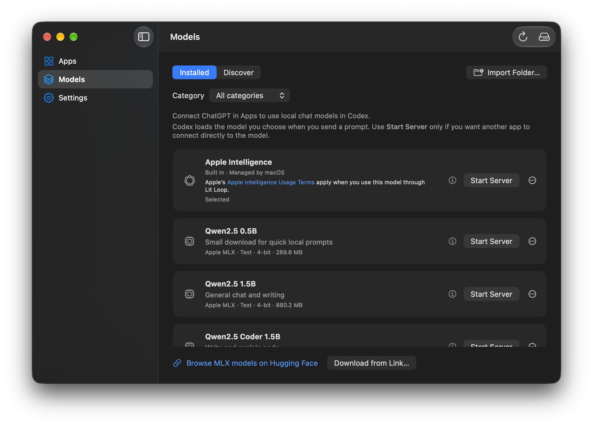

Local models,
in Codex.
Lit Loop brings the models on your Mac into the Codex picker. Choose a model and it loads when you send your first prompt.
How it works
How it works
Choose your models
Use Apple Intelligence or open Discover to download a supported MLX chat model. You can also paste a compatible Hugging Face model link.
Connect to Codex
In Lit Loop, open Apps and connect ChatGPT. After the restart, your available local models appear in the Codex picker.
Send a prompt
Pick a local model and start chatting. Lit Loop loads it on demand. Set an idle timeout to free MLX memory between sessions.
Compatibility
- Apple Intelligence
- Requires a supported Mac with macOS 26 or later and Apple Intelligence enabled in System Settings.
- Apple MLX
- Download and run supported MLX text and vision models on Apple silicon with macOS 27 or later.
- Ollama & llama.cpp
- When a companion app is running, use its switch in Lit Loop to include its compatible models in the shared Codex picker.